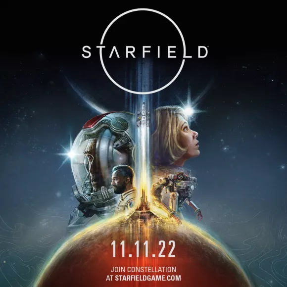

Starfield
- Desarrollador: Bethesda Softworks
- Editor: Bethesda Softworks
- Género: Rol, Acción RPG (Ciencia ficción y Espacial)
- Jugadores: 1 (Competitivo: No / Cooperativo: No)
- Duración: 30 horas aprox. sólo misiones principales
- Idioma: Textos en español y voces en español
- Lanzamiento: 6 de septiembre de 2023 (Pegi: +18)
Starfield es un juego altamente anticipado desarrollado por Bethesda Game Studios, conocido por éxitos como The Elder Scrolls y Fallout. Aquí tienes un resumen de las características clave de Starfield:
- Ambientación futurista y exploración planetaria: A diferencia de las anteriores sagas de Bethesda, Starfield se adentra en un entorno futurista, llevando a los jugadores más allá de nuestro sistema solar para explorar nuevos planetas y sistemas estelares.
- Libertad de exploración: Starfield promete una libertad sin precedentes para explorar un vasto universo, con alrededor de un millar de planetas divididos en sistemas. Los jugadores pueden decidir a dónde van y cómo exploran este extenso cosmos.
- Personalización de personajes y vehículos: Los jugadores pueden crear su propio personaje y personalizar su nave espacial. Además, al igual que en juegos anteriores de Bethesda, se espera un alto grado de personalización y construcción en las bases espaciales.
- Variedad de actividades: El juego ofrecerá una amplia gama de actividades, que van más allá de las misiones principales. Los jugadores pueden comerciar, ser cazarrecompensas, personalizar su nave espacial, hacer contrabando, comprar una casa y más, lo que permite una experiencia de juego muy diversa.
- Exploración de planetas y recolección de recursos: Los jugadores podrán visitar distintos planetas para obtener recursos, lo que agrega un elemento de supervivencia y estrategia a la experiencia.
- Misterio central: La historia principal gira en torno a la búsqueda de artefactos únicos y promete ser épica, aunque como en otros juegos de Bethesda, las historias secundarias y la exploración del mundo también serán de gran importancia.